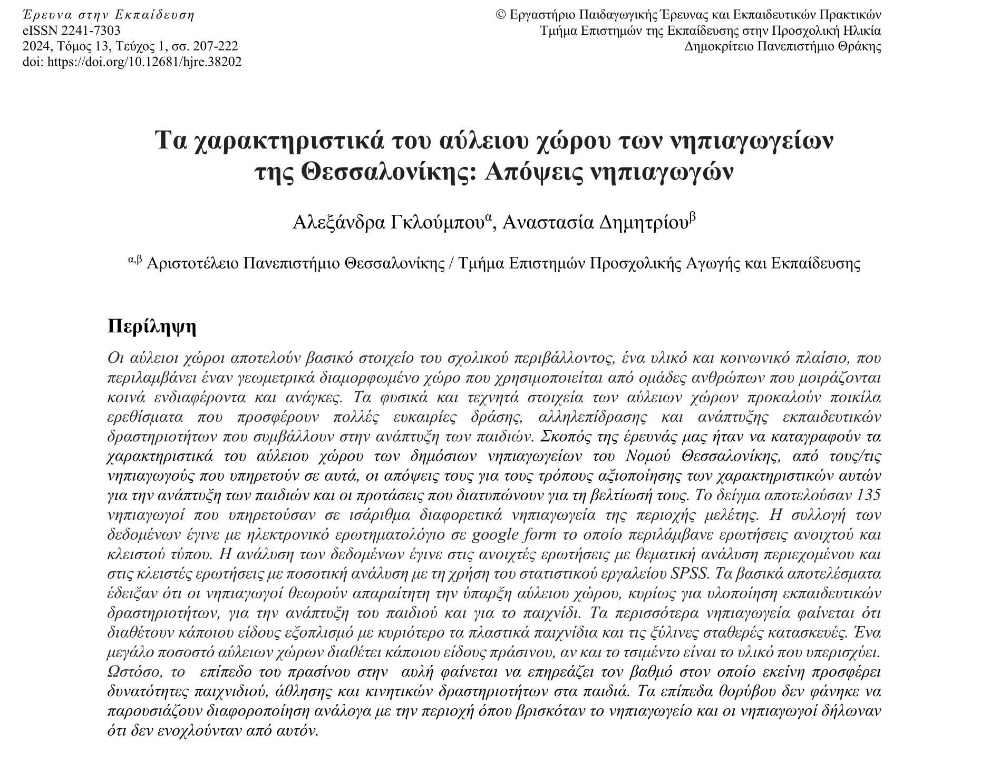
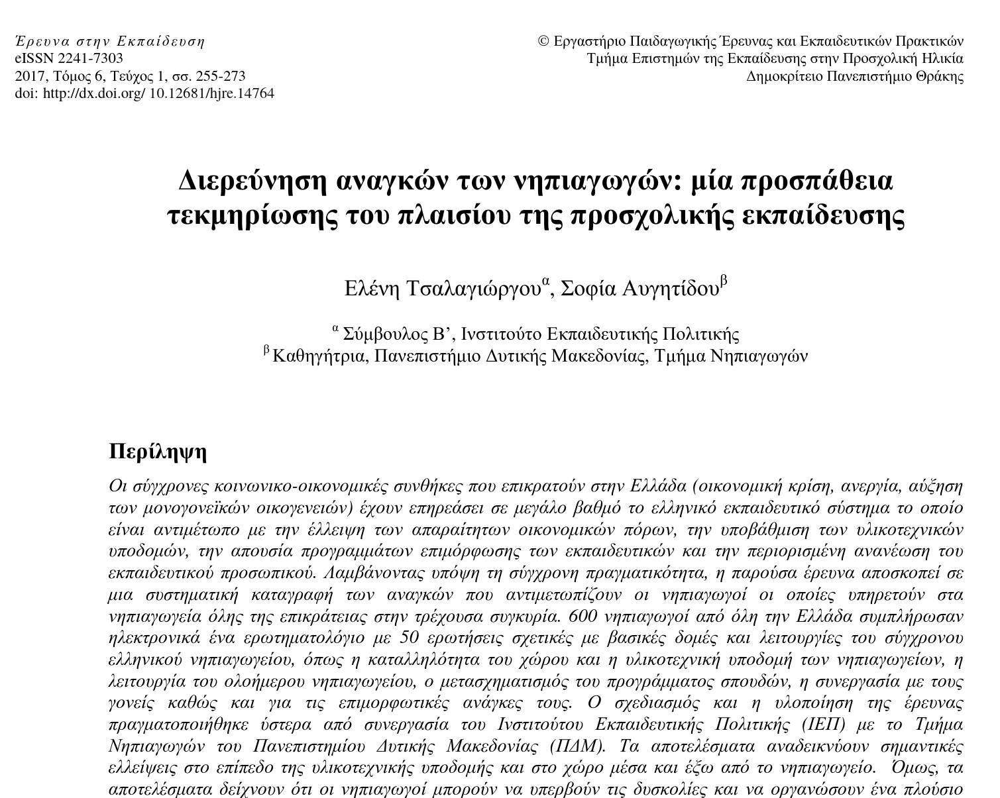

Μεθοδολογία Εκπαιδευτικής Έρευνας (0110Υ)
Χειμερινό εξάμηνο 2025-2026
2026-10-16
Επιστημονική έρευνα
- Συστηματική, αντικειμενική διερεύνηση ερωτημάτων.
- Περιλαμβάνει ορισμό προβλήματος, ανασκόπηση της βιβλιογραφίας, συλλογή δεδομένων, ανάλυση και συμπεράσματα.
- Στόχος: αξιόπιστες απαντήσεις και δυνατότητα αναπαραγωγής των ευρημάτων.
Ποσοτική έρευνα
- Διερεύνηση σχέσεων μεταξύ μεταβλητών που μπορούν να μετρηθούν.
- Έλεγχος υποθέσεων με αριθμητικά δεδομένα και στατιστικές μεθόδους.
- Έμφαση σε αντιπροσωπευτικά δείγματα, αξιοπιστία, εγκυρότητα.
Σχέδια ποσοτικής έρευνας
- δημοσκοπική έρευνα
- έρευνα συσχέτισης
- αιτιακή-συγκριτική έρευνα
- πειραματική έρευνα
- πειραματική έρευνα ενός υποκειμένου
Χαρακτηριστικά ποσοτικής προσέγγισης
- Προκαθορισμένες μεταβλητές και όργανα μέτρησης.
- Δειγματοληψία και εφαρμογή στατιστικών μεθόδων.
- Έλεγχος εξωγενών παραγόντων όπου είναι δυνατόν.
- Σκοπός: εκτιμήσεις, συσχετίσεις, ισχυρισμοί αιτιότητας (σε πειράματα).
Δημοσκοπική έρευνα
Γενικά
ΣΤΟΧΟΣ
Η κατανόηση της στάσης / γνώμης των ανθρώπων για κάποιο θέμα
Η συλλογή δεδομένων γίνεται με τη χρήση του ερωτηματολογίου δημοσκόπησης.
Η δημοσκόπηση μπορεί να είναι δειγματοληπτική ή απογραφική.
Δυσκολίες
- Μικρά δείγματα σε σχέση με των αριθμό των ερωτηματολογίων που χρησιμοποιούνται.
- Απαντούν περισσότερο άνθρωποι με συγκεκριμένα χαρακτηριστικά ή απόψεις.
- Συχνά απαιτείται σχεδιασμός του ερωτηματολογίου.
- Ο ερευνητής σπάνια έχει πρόσβαση στους συμμετέχοντες για επεξήγηση των ερωτήσεων.
Σχεδιασμός
- Συγχρονική δημοσκοπική έρευνα (cross-sectional survey)
- Διαχρονική δημοσκοπική έρευνα (longitudinal survey)
Συγχρονική δημοσκοπική έρευνα
Τα δεδομένα συλλέγονται μία φορά και παρέχουν ένα στιγμιότυπο των τρεχουσών συμπεριφορών, στάσεων και πεποιθήσεων.
ΠΛΕΟΝΕΚΤΗΜΑΤΑ
- Γρήγορη ολοκλήρωση.
ΜΕΙΟΝΕΚΤΗΜΑΤΑ
- Δεν μπορούμε να παρακολουθήσουμε την εξέλιξη φαινομένων.
- Δεν μπορούμε να αξιολογήσουμε αιτιακές σχέσεις.
Διαχρονική δημοσκοπική έρευνα
Τα δεδομένα συλλέγονται πολλές φορές.
ΠΛΕΟΝΕΚΤΗΜΑΤΑ
- Παρακολούθηση εξέλιξης φαινομένων.
- Μπορούν να εξαχθούν συμπεράσματα αιτιότητας.
ΜΕΙΟΝΕΚΤΗΜΑΤΑ
- Απαιτούν μεγάλο χρονικό διάστημα για την ολοκλήρωσή τους.
- Μείωση των συμμετεχόντων όσο εξελίσσεται η μελέτη.
Κατηγορίες διαχρονικών δημοσκοπικών ερευνών
Δημοσκοπική έρευνα τάσεων (trend survey):
Μελέτη ενός συγκεκριμένου πληθυσμού στο χρόνο με επαναλαμβανόμενες δειγματοληψίες.
ΠΑΡΑΔΕΙΓΜΑ
Μελέτη της γνώμης των αποφοίτων του ΠΤΝ για την ισότητα των φύλων.
Κατηγορίες διαχρονικών δημοσκοπικών ερευνών
Δημοσκοπική έρευνα ομοταξίας (cohort survey):
Μελέτη συγκεκριμένης ομάδας με τη χρήση πολλαπλών δειγματοληψιών.
ΠΑΡΑΔΕΙΓΜΑ
Μελέτη της επίδρασης των lockdown στις εκπαιδευτικές προσγγίσεις των αποφοίτων παιδαγωγικών σχολών του 2019.
Κατηγορίες διαχρονικών δημοσκοπικών ερευνών
Δημοσκοπική έρευνα πάνελ (panel survey):
Μελέτη συγκεκριμένης ομάδας με τη χρήση πολλαπλών μετρήσεων.
ΠΡΟΣΟΧΗ: Μετράμε πολλές φορές τους ίδιους ακριβώς ανθρώπους!
ΠΑΡΑΔΕΙΓΜΑ
Μελέτη της επαγγελματικής ικανοποίησης 100 νηπιαγωγών της δημόσιας εκπαίδευσης.
Κατηγορίες διαχρονικών δημοσκοπικών ερευνών
Δημοσκοπική έρευνα παρακολούθησης (follow-up survey):
Επανξέταση της ίδιας ομάδας ανθρώπων ύστερα από ένα χρονικό διάστημα.
ΠΑΡΑΔΕΙΓΜΑ
Επανεξέταση μίας ομάδας εκπαιδευτικών 2 χρόνια μετά την παρακολούθηση ενός εκπαιδευτικού προγράμματος. Στόχος είναι να μελετηθεί αν ύστερα από μεγάλο διάστημα οι εκπαιδευτικοί εξακολουθούν να εφαρμόζουν όσα διδάχθηκαν.
Διεξαγωγή δημοσκοπικής έρευνας
Οι δημοσκοπικές έρευνες έχουν δύο μορφές:
- Ερωτηματολόγιο
- Συνέντευξη
Δημοσκοπική έρευνα με ερωτηματολόγιο
Τα ερωτηματολόγια χορηγούνται είτε σε χαρτί (π.χ. ταχυδρομικά) είτε σε ηλεκτρονική μορφή.
ΠΛΕΟΝΕΚΤΗΜΑΤΑ
- Οικονομικό.
- Συλλογή δεδομένων από μεγάλα δείγματα.
ΜΕΙΟΝΕΚΤΗΜΑ
- Δεν υπάρχει δυνατότητα διευκρινίσεων αν μία ερώτηση δεν είναι κατανοητή.
Δημοσκοπική έρευνα με συνέντευξη
Οι ερωτήσεις γίνονται στους συμμετέχοντες από κατά τη διάρκεια προφορικής, κατά πρόσωπο συνεδρίας.
ΠΛΕΟΝΕΚΤΗΜΑΤΑ
- Υπάρχει δυνατότητα διευκρινίσεων αν μία ερώτηση δεν είναι κατανοητή.
- Μεγαλύτερη αξιοπιστία στα δεδομένα που συλλέγονται.
- Μπορεί να ηχογραφηθεί για μετέπειτα επεξεργασία.
ΜΕΙΟΝΕΚΤΗΜΑΤΑ
- Χρονοβόρα διαδικασία.
- Συνήθως μικρότερα δείγματα.
Βήματα διεξαγωγής δημοσκόπησης
Βήμα 1: Αναγνώριση του προβλήματος
- Διατύπωση συγκεκριμένων στόχων.
- Διατύπωση γενικής ερώτησης.
- Επιμερισμός σε πιο συγκεκριμένα θέματα που συνθέτουν το κύριο.
Βήματα διεξαγωγής δημοσκόπησης
Βήμα 2: Κατασκευή του ερωτηματολογίου
- Ερωτήσεις που να σχετίζονται με το θέμα. Κάθε ερώτηση να έχει ένα σκοπό.
- Να προτιμώνται οι δομημένες ερωτήσεις (π.χ. επιλογή από λίστα αποδεκτών απαντήσεων).
- Οι αδόμητες ερωτήσεις μπορεί να βοηθήσουν στην κατανόηση του σκεπτικού κάποιων απαντήσεων.
Βήματα διεξαγωγής δημοσκόπησης
Βήμα 2: Κατασκευή του ερωτηματολογίου
- Ξεκάθαρες ερωτήσεις, με επεξηγήσεις διφορούμενων όρων.
- Να μην υπονοείται κάποια προτίμηση σε συγκεκριμένη απάντηση.
- Να μη γίνονται ερωτήσεις που προϋποθέτουν γεγονότα που μπορεί να μην ισχύουν (π.χ. ώρες χρήσης του εργαστηρίου Η/Υ).
Βήματα διεξαγωγής δημοσκόπησης
Βήμα 3: Πιλοτικός έλεγχος
- Το ερωτηματολόγιο χορηγείται δοκιμαστικά σε μικρή ομάδα συμμετεχόντων.
- Η ομάδα αυτή πρέπει να είναι επίσης δείγμα από τον πληθυσμό στόχο.
- Ενθάρρυνση για κριτική.
ΤΕΛΙΚΟ ΠΡΟΪΟΝ
Αναθεωρημένο ερωτηματολόγιο το οποίο θα υποβληθεί στην τελική ομάδα συμμετεχόντων.
Βήματα διεξαγωγής δημοσκόπησης
Βήμα 4: Συγγραφή συνοδευτικής επιστολής
Κάθε ερωτηματολόγιο συνοδεύεται από επιστολή η οποία:
- Εξηγεί τους στόχους της έρευνας.
- Εξηγεί τη σημαντικότητα της έρευνας.
- Παρουσιάζει τα θέματα για τα οποία θα ερωτηθούν οι συμμετέχοντες.
- Δίνει στοιχεία επικοινωνίας σε περίπτωση ερωτήσεων/παρατηρήσεων.
- Μπορεί και αυτή να διανεμηθεί πιλοτικά.
Βήματα διεξαγωγής δημοσκόπησης
Βήμα 5: Επιλογή συμμετεχόντων
- Καθορισμός πληθυσμού στόχου.
- Χρήση κάποιας μεθόδου δειγματοληψίας.
Βήματα διεξαγωγής δημοσκόπησης
Βήμα 6: Διανομή ερωτηματολογίου
- Επιλογή μεθόδου διανομής (ηλεκτρονικά, προσωπικά, τηλεφωνικά, συνέντευξη)
- Να ακολουθούνται οι βασικές ηθικές αρχές της έρευνας.
- Οι ερωτήσεις να μην είναι απειλητικές.
- Να διασφαλίζεται η ανωνυμία καθ’όλη τη διάρκεια της έρευνας.
Διαχείριση της άρνησης απάντησης
Οι δημοσκοπικές μελέτες ερωτηματολογίου χαρακτηρίζονται από μεγάλα ποσοστά άρνησης απάντησης.
Διερεύνηση της τυχαιότητας της άρνησης απάντησης:
- Διαλέγουμε ένα μικρό τυχαίο δείγμα συμμετεχόντων που απάντησαν.
- Διαλέγουμε ένα αντίστοιχο δείγμα από όσους δεν απάντησαν.
- Κάνουμε συνενέντευξη με όσους δεν απάντησαν.
- Συγκρίνουμε τις απαντήσεις των δύο δειγμάτων.
Ανάλυση αποτελεσμάτων
- Απλή περιγραφική μελέτη παρουσιάζοντας τα ποσοστά των απαντήσεων που έλαβε η κάθε ερώτηση.
- Ομαδοποίηση ερωτήσεων και δημιουργία συνολικών βαθμολογιών ανά ομάδα.
- Διερεύνηση αν τα γενικά συμπεράσματα επιβεβαιώνονται σε υπο-ομάδες του πληθυσμού.
Παραδείγματα
Αύλειοι χώροι

Θεωρητικό μέρος
- Χρησιμότητα αύλειων χώρων (γενικά).
- Από παιδαγωγική άποψη.
- Ρόλος αρχιτεκτονικών χαρακτηριστικών.
- Οι αύλειοι χώροι είναι υποβαθμισμένοι.
- Ειδικά στην Έλλάδα.
- Κινήματα που εντάσσουν τον άυλειο χώρο στην εκπαιδευτική διαδικασία.
- Στην Ελλάδα πολύ περιορισμένη έρευνα.
Ερευνητικά ερωτήματα
- Ποια είναι τα υφιστάμενα χαρακτηριστικά του αύλειου χώρου των νηπιαγωγείων του νομού Θεσσαλονίκης (υποδομή, φυσικά και τεχνητά στοιχεία);
- Ποια είναι η άποψη των νηπιαγωγών γενικά για την ύπαρξη αύλειου χώρου στα νηπιαγωγεία και την ποιότητά του και ειδικότερα για την ποιότητα των χαρακτηριστικών του αύλειου χώρου του νηπιαγωγείου όπου υπηρετούν;
- Αν και σε ποιο βαθμό ο υφιστάμενος αύλειος χώρος του νηπιαγωγείου όπου υπηρετούν προσφέρει ερεθίσματα και προκλήσεις στα παιδιά που συμβάλλουν στην ανάπτυξή τους;
Ερωτηματολόγια
Χρησιμοποιήθηκαν ερωτηματολόγια με 3 μέρη:
- Α’ μέρος: Δημογραφικά
- Β’ μέρος: Σχετικά με πρώτο και δεύτερο ερευνητικό ερώτημα.
- Γ’ μέρος: Σχετικά με τρίτο ερευνητικό ερώτημα.
Ανάγκες νηπιαγωγών


Μεθοδολογία Εκπαιδευτικής Έρευνας | Παιδαγωγικό Τμήμα Νηπιαγωγών - ΠΔΜ